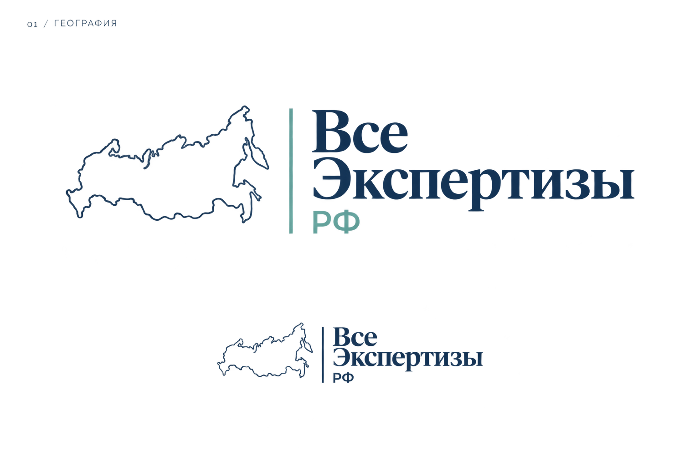
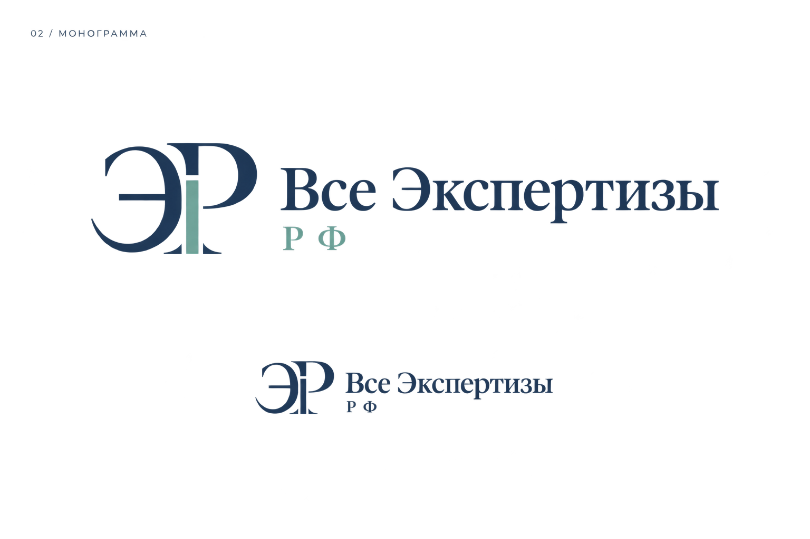
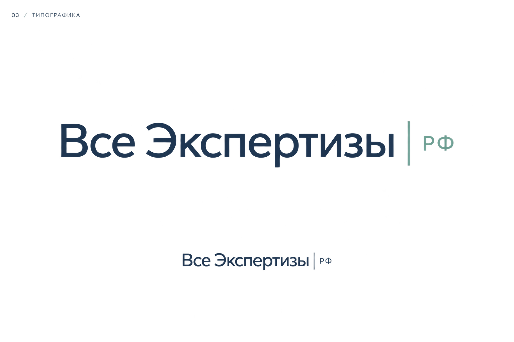

Все Экспертизы РФ · Эскизы для выбора направления

Сохраняет связь с нынешним логотипом и подчёркивает работу по России.

Компактный самостоятельный знак. Самый строгий и представительный вариант.

Акцент на названии. Самый простой и современный вариант.